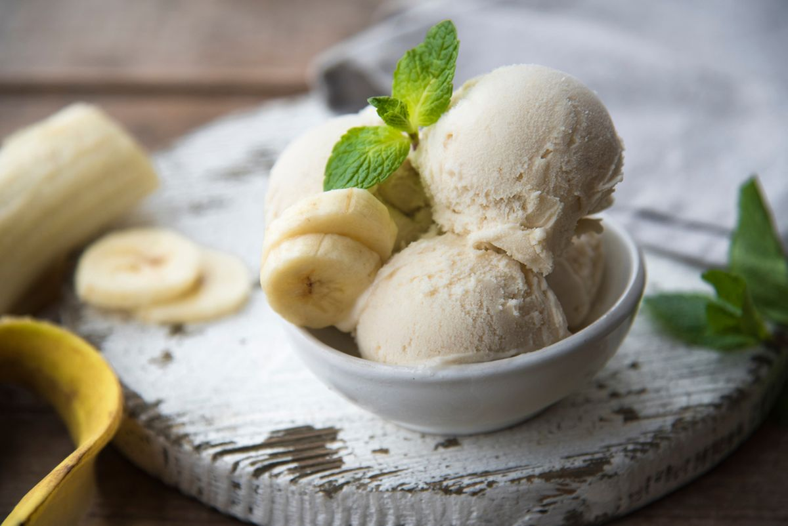

★ RECEITA DE SORVETE DE BANANA ★

★ INGREDIENTES ★
5 Bananas.
1 Lata de Creme de Leite.
1 Xícara de chá de leite.
1 Colher de Sopa de Açúcar.
★ MODO DE PREPARO ★
- Amasse as bananas e misture até que vire uma massa homogênea.
- Leve ao congelador por 2 horas.
- Após duas horas, retire do congelador e acrescente à mistura o leite, o creme de leite e o açúcar.
- Bata tudo no liquidificador por 5 minutos
- Leve ao congelador novamente por 6 horas ou até que adquira a consistência de sorvete.>